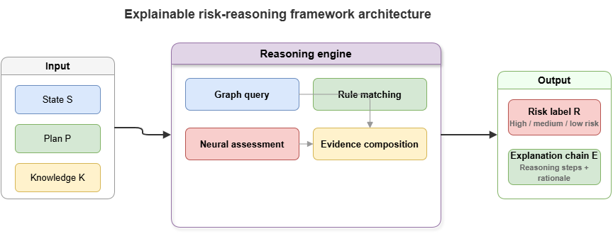
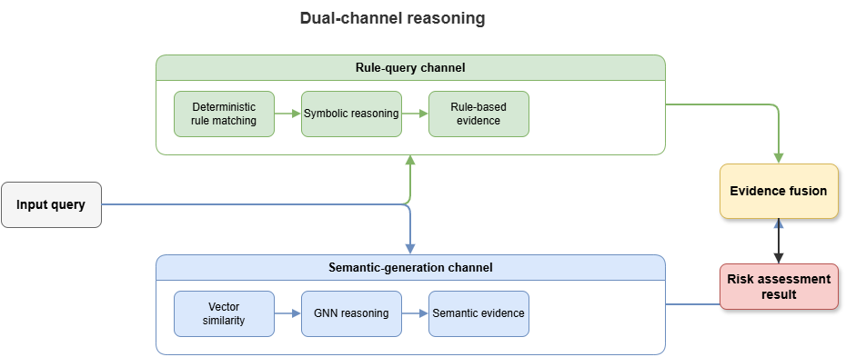
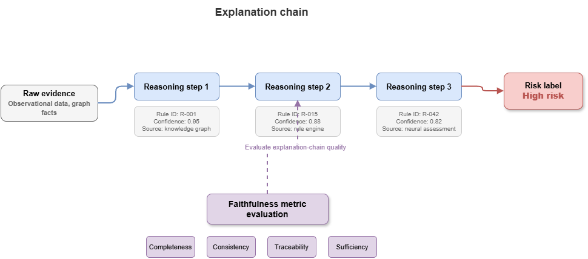

After Chapters 8–9 on knowledge injection and hybrid neuro-symbolic reasoning, this chapter turns to methodology: how to organize a static, explainable risk-reasoning framework. Using the low-altitude traffic graph (SkyKG) as substrate, we analyze dual-channel reasoning, joint production of risk labels and explanation chains, and quantitative faithfulness evaluation—yielding a deployable static-cognition architecture.
10.1 Defining static risk reasoning#
In urban air mobility (UAM), static risk reasoning arises in pre-flight approval, static route planning, and post-hoc compliance audits. Unlike millisecond airborne deconfliction, it stresses logical completeness and regulatory conformance.
Formalize static risk reasoning as \(f: (\mathcal{S}, \mathcal{P}, \mathcal{K}) \rightarrow (\mathcal{R}, \mathcal{E})\):
Current state (\(\mathcal{S}\)): Aircraft performance, vertiport state, forecast weather—static or quasi-static.
Flight plan (\(\mathcal{P}\)): Waypoints, schedule, mission type (e.g., logistics, medevac).
Domain knowledge (\(\mathcal{K}\)): SkyKG—airspace topology, ground–air physics, CCAR aviation rules.
Risk label (\(\mathcal{R}\)): Discrete safety classes, e.g., Pass (Safe), Manual review (Warning), Reject (Critical).
Explanation chain (\(\mathcal{E}\)): Logical argument steps and evidence sets supporting the label—central value of the framework.
10.2 Ontology + rules + retrieval indexes in concert#
To let LLM-centric modules use SkyKG effectively, the substrate needs reasoning-oriented organization. Raw graph queries alone do not match NL semantics; a three-part stack helps:
Ontology indexing: Project schema and metadata into structured prompts so models know which concepts exist and which relations are legal.
Rule base: Hard regulations (e.g., “UAVs shall not enter civil airport obstacle limitation surfaces without exemption”) stored as Datalog or FOL, executed by discrete solvers—not interpreted solely by LLM semantics.
Vector–graph joint index: For GraphRAG, slice graph instances and properties, embed them densely. On requests like “assess route compliance for UAV A01,” combine vector similarity (e.g., weather NOTAMs) with multi-hop structured hops (e.g.,
A01 -> belongs_to -> Logistics_Company_X).
10.3 Dual-channel reasoning: rule query vs. semantic generation#
To balance absolute accuracy (anti-hallucination) and semantic flexibility (rich context), use parallel dual channels:
Channel 1 — Rule query channel (deterministic symbolic reasoning)
The “fast thinker” or hard guard: compile requests or plans into SPARQL or solver inputs, run deductive checks on SkyKG, flag hard physical conflicts (e.g., waypoints intersecting no-fly volumes) and clear regulatory violations. Outputs are fully deterministic; red-line hits yield immediate reject labels.Channel 2 — Semantic generation channel (probabilistic neural reasoning)
The “slow thinker”: when hard rules do not fire but latent compound risks remain (e.g., gust advisories along the corridor plus payload near limits), GraphRAG pulls entity subgraphs and attribute constraints as context for an LLM to chain-think (chain-of-thought) about composite risk.
An arbiter fuses channels: hard-rule negatives veto; LLM output enriches narrative and holistic compliance reporting.
10.4 Risk labels bound to explanation chains#
Classical deep models often emit opaque risk scores (e.g., 95% collision probability). Here, risk labels must be tightly coupled to an explanation chain.
A sound chain contains:
Premises: Concrete triples from SkyKG, e.g.,
(UAV_1, max_wind_resistance, Level_5).Applied rules: Regulatory or ontology constraints, e.g.,
Rule_102: If forecast wind at departure airspace exceeds aircraft wind resistance, takeoff is prohibited.Reasoning steps: Logic combining premises and rules, e.g., “Forecast is Beaufort 6, exceeding max resistance 5.”
Conclusion: Derived label (e.g., high risk / no takeoff).
Structured chains aid human reviewers (e.g., ATC) and strengthen trust and airworthiness-evidence potential.
10.5 Faithfulness: rule alignment, unsupported claims, evidence coverage#
LLM generators risk hallucination. Quantitative faithfulness metrics include:
Rule alignment rate: Consistency with Channel-1 symbolic outcomes. Solver says violation but LLM says safe ⇒ alignment collapses—severe failure.
Unsupported claim rate: Share of factual statements in generated explanations not backed by retrieved subgraph evidence—lower is better.
Evidence coverage: Fraction of critical retrieved facts used in the explanation—omitting retrieved severe weather, for example, lowers coverage.
Together they form a practical “golden trio” for static neuro-symbolic explanation quality.
10.6 Strengths and limits of static single-scenario frameworks#
SkyKG-centric static reasoning turns black-box decisions into auditable white-box reports, easing trust for offline approval and admission testing—Layer 2’s most mature deployment path.
Limits:
Latency: Heavy subgraph retrieval plus autoregressive LLM generation often lands at seconds to tens of seconds end-to-end.
High-frequency dynamics: Winds and non-cooperative traffic evolve continuously; static stacks handle snapshots, not fast closed-loop control.
10.7 From static cognition to dynamic coordination#
Pre-flight perfection meets real-world perturbation at takeoff. Dense urban swarms demand millisecond fast decisions instead of static slow deliberation.
If this chapter answers how rules forestall known risks with explanations, the next challenge is how to foresee millisecond-scale unknown conflicts in spatiotemporally coupled networks and coordinate multi-UAV avoidance. Knowledge graphs must become temporal KGs (TKGs); reasoning cores must emphasize GNNs over LLMs for that regime.
Part IV (dynamic coordination) crosses that boundary toward real-time, multi-agent neuro-symbolic models.
Chapter summary#
We organized explainable static risk reasoning: formal mapping from state, plan, and knowledge to labels and chains; ontology, rules, and joint indexes; dual channels for deterministic checks vs. semantic elaboration; label–chain binding; faithfulness via alignment, unsupported-claim rate, and coverage; and static limits motivating TKGs and dynamic graph reasoning.
Key concepts#
Static risk reasoning: Pre-flight approval, compliance, and offline audit tasks driven by knowledge.
Dual-channel reasoning: Rule-query plus semantic-generation architecture.
Explanation chain: Structured link among facts, rules, steps, and conclusions.
Faithfulness evaluation: Metrics for evidence- and rule-grounded explanations.
SkyKG methodology: KG-first design of static explainable risk reasoning.
Study questions#
Why bind risk labels and explanation chains as joint outputs?
Which tasks must stay in the rule channel, and which can the semantic channel augment?
If prose is fluent but unsupported-claim rate is high, is the system still trustworthy?
Case study#
Pre-flight static compliance review: rule channel for no-fly volumes, wind resistance, and permit conditions; semantic channel for NOTAMs and mission context; joint output Pass / Review / Reject with full chains.
Figure suggestions#
Figure 10-1: Overall static risk-reasoning architecture.

Figure 10-2: Dual-channel cooperation—rule query vs. semantic generation.

Figure 10-3: Mapping labels, evidence chains, and faithfulness metrics.

Formula index#
Static risk mapping: \(f: (\mathcal{S}, \mathcal{P}, \mathcal{K}) \rightarrow (\mathcal{R}, \mathcal{E})\)
\(\mathcal{S}\): state; \(\mathcal{P}\): plan; \(\mathcal{K}\): knowledge substrate; \(\mathcal{R}\): risk label; \(\mathcal{E}\): explanation chain.
Faithfulness emphasizes metric–chain correspondence rather than heavy derivation.
References#
Ribeiro, M. T., Singh, S., & Guestrin, C. (2016). “Why Should I Trust You?”: Explaining the Predictions of Any Classifier. Proceedings of the 22nd ACM SIGKDD International Conference on Knowledge Discovery and Data Mining (KDD).
Lundberg, S. M., & Lee, S.-I. (2017). A Unified Approach to Interpreting Model Predictions. Advances in Neural Information Processing Systems (NeurIPS).
Lewis, P., et al. (2020). Retrieval-Augmented Generation for Knowledge-Intensive NLP Tasks. Advances in Neural Information Processing Systems (NeurIPS).
Wei, J., et al. (2022). Chain-of-Thought Prompting Elicits Reasoning in Large Language Models. Advances in Neural Information Processing Systems (NeurIPS).
Hogan, A., et al. (2021). Knowledge Graphs. ACM Computing Surveys, 54(4), Article 71.
Doshi-Velez, F., & Kim, B. (2017). Towards a Rigorous Science of Interpretable Machine Learning. arXiv preprint arXiv:1702.08608.